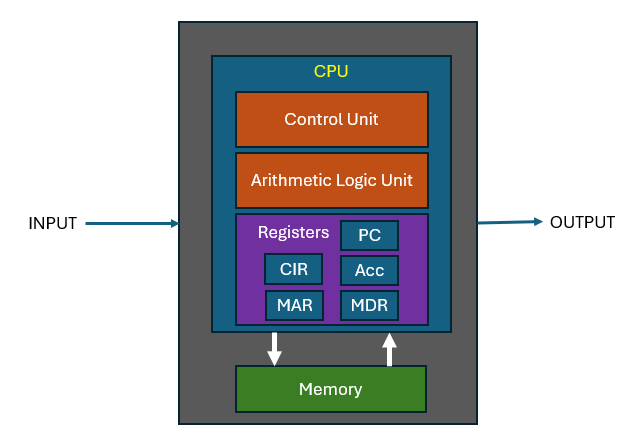
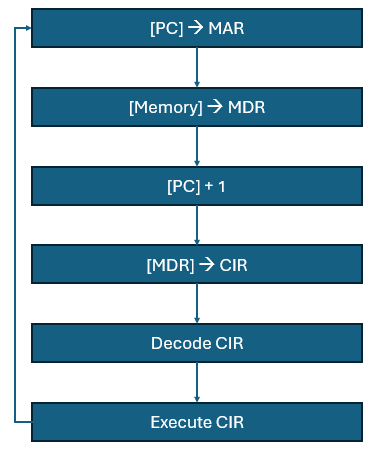

Systems Architecture
Objectives
- Recognize the CPU as the core component of a computer system responsible for executing instructions and performing calculations.
- Explain the main functions of the CPU, including fetching instructions, decoding instructions, executing operations, and storing or writing results back to memory.
- Identify and comprehend the impact of key performance factors on a CPU: clock speed, the number of processor cores, and cache size.
- Describe the roles and functions of essential CPU components, such as the Control Unit, Arithmetic Logic Unit (ALU), registers, cache memory, and the clock.
- Understand the Fetch-Decode-Execute Cycle as a fundamental process in CPU operation, involving fetching instructions from memory, decoding instructions, and executing operations.
- Recognize and explain the roles of special-purpose registers such as the Program Counter (PC), Memory Address Register (MAR), Memory Data Register (MDR), and Accumulator in the CPU's operation.
- Know the stored program concept, recognizing the role of memory as a store for both data and instructions.
At the heart of the computer system sits the Central Processing Unit (CPU). Its primary purpose is to execute instructions and perform calculations, making it the most crucial component of a computer system.
It carries out the following main functions:
- Fetching instructions from memory.
- Decoding instructions to determine what operation to perform.
- Executing the operation, which may involve arithmetic or logic calculations.
- Storing or writing results back to memory.
CPU Performance
The performance of a CPU is influenced by several factors, and three key parameters that significantly impact its performance are clock speed, the number of processor cores, and cache size.
- Clock Speed: The clock speed, measured in Hertz (Hz) or Gigahertz (GHz), represents how fast the CPU can execute instructions. It indicates the number of cycles per second that the CPU can perform. Generally, higher clock speeds lead to faster execution of instructions and better overall performance. A higher clock speed allows the CPU to process more instructions in a given time, improving the speed of computations. However, while a higher clock speed is beneficial, it's essential to note that comparing clock speeds alone may not provide an accurate measure of performance across different CPU architectures. Efficiency, architecture, and other factors also play a crucial role.
- Number of Processor Cores: Modern CPUs often have multiple processor cores, with each core capable of executing its set of instructions independently. Increasing the number of processor cores can improve multitasking and parallel processing capabilities. Tasks can be divided among multiple cores, allowing the CPU to handle multiple instructions simultaneously. This can lead to significant performance gains in applications designed to take advantage of parallelism. However, not all applications benefit equally from multiple cores. Some tasks are inherently sequential and may not see a substantial performance boost with additional cores. The effectiveness of multiple cores also depends on the software's ability to parallelize tasks.
- Cache Size: Cache memory is a small, high-speed type of volatile computer memory that provides quick access to frequently used data and instructions. Larger cache sizes can lead to improved performance by reducing the time it takes for the CPU to access frequently used data. A larger cache helps in storing more data and instructions closer to the CPU cores, minimizing the need to fetch data from slower main memory. However, the impact of cache size on performance can vary based on the specific workload. For applications with frequent and predictable access patterns, a larger cache is more beneficial. However, the relationship between cache size and performance is complex and depends on the application's characteristics.
Components of the CPU
The CPU consists of several components:
-
Control Unit (CU): The control unit manages and coordinates the operations of the CPU. It fetches instructions from memory, decodes them, and controls the flow of data within the CPU and between other computer components.
-
Arithmetic Logic Unit (ALU): The ALU is responsible for performing arithmetic and logic operations, such as addition, subtraction, AND, OR, and NOT operations. It carries out the actual computational tasks based on the instructions provided.
-
Registers: Registers are small, high-speed storage locations within the CPU that temporarily hold data and instructions. They play a crucial role in the execution of instructions by providing quick access to operands and intermediate results.
-
Cache Memory: Cache memory is a small, high-speed type of volatile computer memory that provides high-speed data access to a processor and stores frequently used computer programs, applications, and data. It helps reduce the time it takes for the CPU to access data from the main memory.
-
Clock: The clock is a timing device that synchronizes the activities of the CPU. It generates a series of electrical pulses at a consistent rate, regulating the execution of instructions and the overall operation of the CPU.
These components work together to fetch, decode, and execute instructions from memory enabling the CPU to perform the necessary calculations and operations required for running applications and handling tasks.

The above schematic is a simplified interpretation of the components of a CPU. In reality CPUs are significantly more complex and the technology of designing and building CPUs is a rapidly changing field for engineers. However, at this level we can gain an appreciation of how a CPU goes about its business of fetching and executing instructions.
For our purposes we will focus on what is known as the von Neumann architecture. John von Neumann was a Hungarian mathematician, engineer and computer scientist. In 1945 he designed an architecture for a digital computer with these components. Critical to his design was the role of memory as the store for both data and instructions, encoding both in the same way. This has now been handed down as the stored program concept.
Note
Whilst the phrase von Neumann architecture is something of a misnomer these days it provides a suitable model for investigating the inner workings of a CPU.
Fetch-Decode-Execute Cycle
The fetch-execute (FE) cycle, also known as the Fetch Decode Execute (FDE) cycle, is a fundamental process in the operation of a CPU (Central Processing Unit). It consists of two main stages: the Fetch stage and the Execute stage:
- Fetch: The CPU retrieves the next instruction from memory. This instruction is located at a memory address indicated by the Program Counter (PC).
- Execute: The CPU interprets and executes the fetched instruction, which may involve data processing or control operations.
Referring to the CPU schematic above the CPU uses some special purpose registers as part of the FE cycle:
- Program Counter (PC): The Program Counter keeps track of the memory address of the next instruction to be fetched and executed. It ensures that instructions are fetched and executed in a sequential and orderly fashion. The incrementing of the Program Counter after each fetch ensures that the CPU progresses through the program or set of instructions stored in memory.
- Memory Address Register (MAR): The primary function of the MAR is to hold the memory address of the location in RAM (Random Access Memory) where data or instructions are to be read from or written to. It temporarily holds the memory address of the data or instruction being currently accessed or manipulated during the various stages of the Fetch-Decode-Execute Cycle.
- Memory Data Register (MDR): The primary function of the MDR is to temporarily store data that is either being fetched from memory or is about to be written to memory. The MDR acts as a buffer for data during the transfer between the CPU and the computer's memory.
- Current instruction register (CIR): Usually known as the Instruction Register, another special-purpose register within the CPU that temporarily holds the current instruction being processed or executed. During the Fetch-Decode-Execute Cycle, the CPU fetches an instruction from memory, and the fetched instruction is stored in the IR. The control unit then decodes the instruction to determine the operation to be performed and the operands involved.
- Accumulator (Acc): The accumulator is used for performing arithmetic and logic operations. It serves as a temporary storage location for intermediate results during arithmetic calculations. The value in the accumulator can be updated through arithmetic operations like addition, subtraction, multiplication, and logical operations.
Note
While the concept of an accumulator has historical significance, modern processor architectures may use a more generalized set of registers, and the term "accumulator" is not as commonly used in contemporary CPUs. In modern architectures, there are usually multiple general-purpose registers that can be used for various purposes, including arithmetic and logical operations.
- Status Register (SR) Or, Flags Register, that contains individual bits, known as flags, which represent the status or condition of the processor after an operation. These flags provide information about the results of arithmetic and logic operations, as well as other processor conditions. Typical 'flags' to be found here are Zero flag, Overflow flag, Carry flag, sign flag. They play a crucial role in control flow decisions and conditional branching. For example, a conditional branch instruction might use the Zero Flag to decide whether to branch based on whether the result of a previous operation was zero.
Here's a detailed breakdown of what actions occur at each stage of the Fetch-Execute Cycle, referring to various CPU components:
Fetch:
-
Fetch Instruction:
- The Control Unit (CU) initiates the fetch process by sending a request to the memory to retrieve the next instruction.
- The Program Counter (PC) holds the memory address of the next instruction to be fetched.
- The memory address is transferred from the PC to the Memory Address Register (MAR).
-
Memory Access:
- The address in the MAR is used to access memory (RAM), where the instruction is stored.
- The memory data (instruction) at the address indicated by the MAR is transferred to the Memory Data Register (MDR).
-
Decode Instruction:
- The instruction in the MDR is decoded by the Control Unit.
- The Control Unit determines what operation needs to be executed and what data may be required.
-
Increment PC:
- After the instruction is fetched and decoded, the Program Counter (PC) is incremented to point to the next instruction in memory. This ensures that the CPU is ready to fetch the next instruction in the subsequent cycle.
Execute:
-
Execute Operation:
- Based on the decoded instruction, the Control Unit initiates the execution of the operation.
- If it's an arithmetic or logical operation, the Arithmetic Logic Unit (ALU) performs the calculation.
-
Read/Write Data:
- If the operation involves reading or writing data to memory, the Memory Address Register (MAR) is loaded with the memory address where the data is located or needs to be stored.
- Data may be read from memory and transferred to the MDR for further processing or written to memory from the MDR.
-
Update Registers:
- Depending on the operation, the results may be stored in various registers. For example, the result of an arithmetic operation may be placed in the Accumulator register.
-
Control Unit Actions:
- The Control Unit monitors the execution of the operation, ensuring it proceeds according to the decoded instruction.
- It may also set condition flags or registers based on the outcome of the operation, which can influence future execution.
-
Repeat or Halt:
- After the execution stage is complete, the cycle repeats as the CPU fetches the next instruction, or the CPU may halt its operation if a halt instruction is encountered, ending the program's execution.

The fetch-execute cycle continues to repeat, allowing the CPU to process instructions sequentially, executing each one in turn. The cycle is at the heart of how a CPU performs all tasks, from basic arithmetic operations to complex program execution.